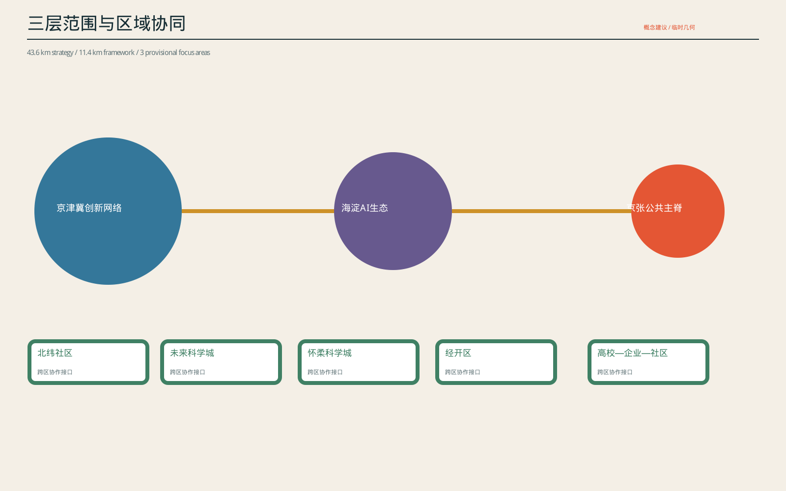
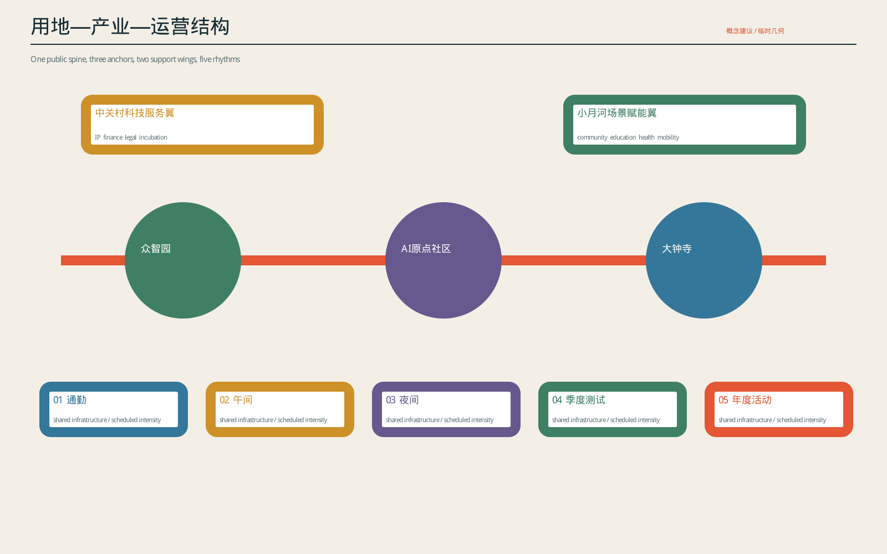
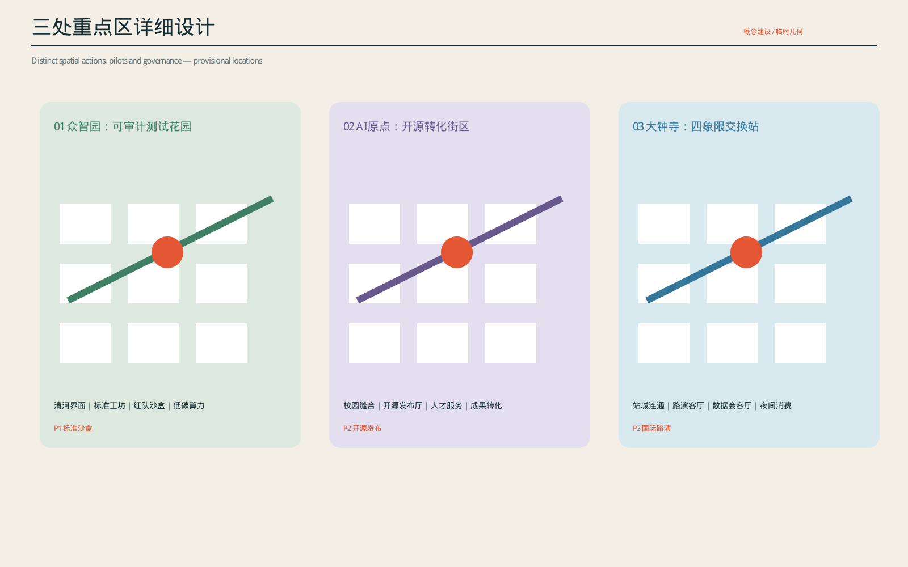
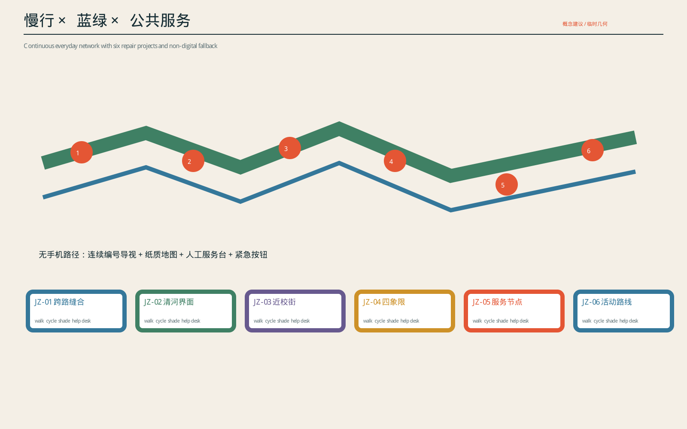
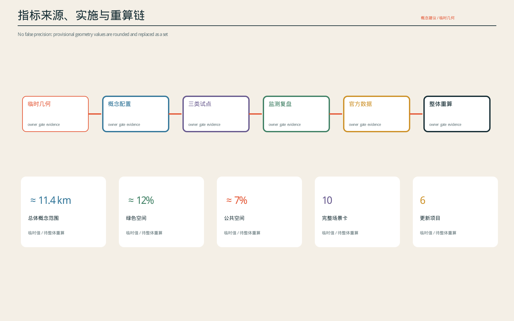

京张节律场
概念建议｜临时几何｜非正式规划指标｜待正式资料后整体重算
以一条公共主脊、三个创新锚点、两条协同翼和五种时间协议，组织可试点、可监测、可退出的 AI 城市基础设施。
总览地图与三层范围
统筹研究范围、总体设计范围与重点区域形成从区域协同到详细试点的工作框架。

用地分区与功能结构
公共主脊连接众智园、AI 原点社区和大钟寺，并由中关村科技服务翼与小月河场景翼补充产业和公共服务。

重点区域详细设计
三处重点区域分别形成测试花园、开源街区和交换站，所有建筑体块均为概念组织示意。

交通慢行与蓝绿公共空间
连续步行骑行路径、轨道接驳、蓝绿廊道与无手机服务路径共同支撑日常和活动状态。

建筑、更新项目与 AI 场景
建筑采用保留、适应性改造、待核验更新三级策略；JZ-01 至 JZ-06 更新项目与十个 AI 场景均配置人工复核、停止条件和无数字替代。
核心指标
约 11.4 km²site_area_sqm｜临时边界面积
约 12%green_ratio｜临时绿色空间比例
约 7%public_space_ratio｜临时公共空间比例

任务覆盖与自检状态
任务覆盖对应 agent.1—agent.6；确定性校验分别检查空间、视觉包装、专业证据和双语文件。当前页面仅陈述投稿者自检，不替代可信 CI、专业评分、版权核验或审批。
来源与假设
来源：资格预审公告、面向智能体任务书、仓库来源登记和临时几何。假设：边界、重点区、控规、权属、道路、轨道、市政、防洪、消防、文保和建筑属性缺口均保持显式；正式资料到位后整体重算。